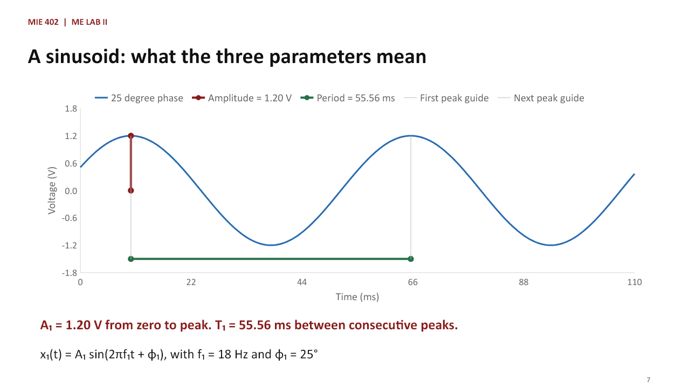
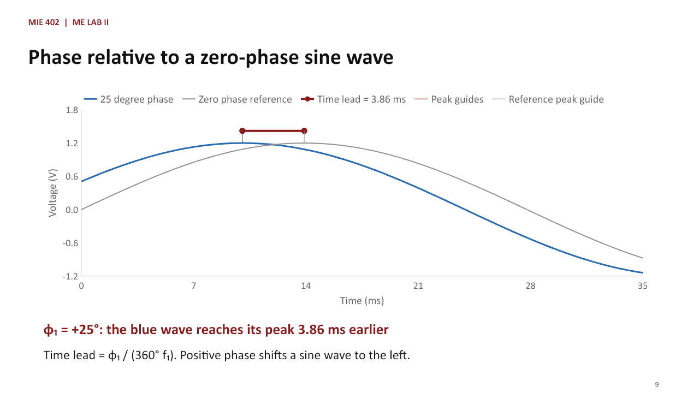
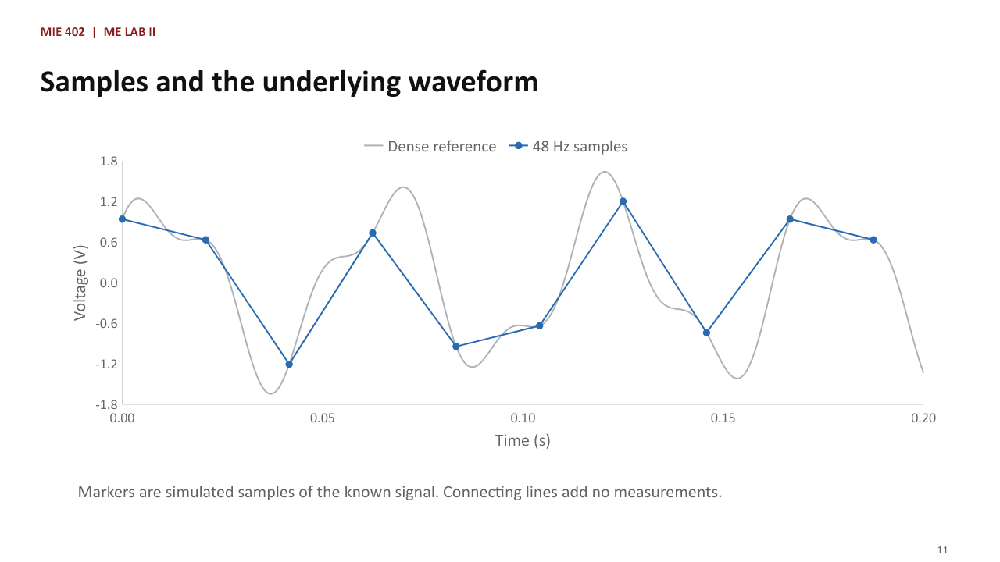
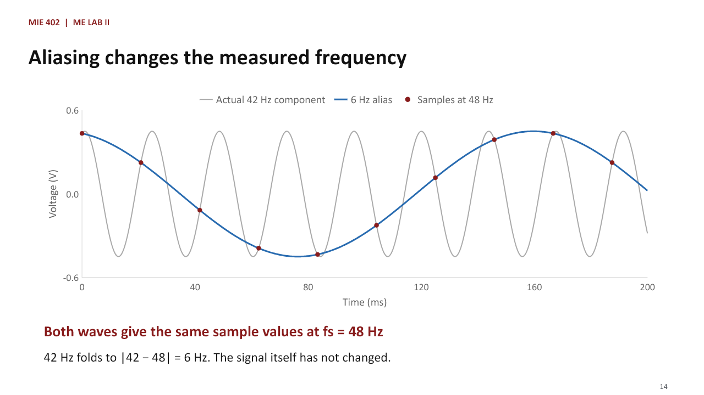

Fall 2026 · 50-minute class
Sampling, FFT, and the
Pre-Lab 1 notebook
Theory and guided data analysis for the first laboratory. All Python code is provided. Students calculate, predict, compare, and explain the results.
Lecture files
Twenty-four slides with detailed instructor notes
Pre-Lab 1 notebook
Prepared analysis cells and a 20-point data-analysis assignment
Theory for this pre-lab
From sound to a voltage signal
A microphone converts changing sound pressure into changing voltage. Moku:Go stores that voltage at selected times. A waveform plots voltage versus time; a spectrum shows which frequencies are present.
Amplitude, frequency, and phase
For x1(t) = A1 sin(2πf1t + φ1), A1 is the peak voltage measured from zero, f1 is the number of cycles per second, and φ1 sets the wave's position at t = 0. The subscript 1 identifies tone 1; the same meanings apply to tone 2.

Phase compared with a reference wave
Compare the blue wave with a sine wave of zero phase at the same amplitude and frequency. A positive phase of 25 degrees advances the peak by 25/(360 × 18) seconds = 3.86 milliseconds. Phase changes the timing of the cycle, while amplitude and frequency stay the same.

Sampling rate and sample interval
A data-acquisition system stores a continuous signal at selected times. If the sample rate is fs samples per second, the sample interval is Δt = 1/fs. A record of duration T contains approximately N = fsT samples.

Mean and RMS
The mean describes the average signed level. RMS describes the overall size of an oscillating signal. A zero-mean sinusoid with amplitude A has RMS = A/√2. For distinct tones measured over complete cycles, their mean-square contributions add.
Nyquist frequency and aliasing
The Nyquist frequency is fN = fs/2. A signal component above this limit appears at a false lower frequency. For the assigned cases, students predict that false frequency before viewing the FFT.

FFT and record duration
The FFT reorganizes the same sampled data from voltage versus time into magnitude versus frequency. A peak location gives a frequency, and peak height estimates its voltage amplitude. The frequency-bin spacing is Δf = fs/N = 1/T. A longer record gives finer frequency resolution; a higher sample rate raises the highest frequency that can be measured without aliasing.
A Hann window reduces leakage from a finite record but widens spectral peaks. Bin spacing alone does not determine whether two nearby tones can be separated. Gain correction adjusts amplitude scaling, but off-bin and overlapping peaks still need care. Windowing cannot remove aliasing.
Student data analysis
- Calculate theoretical mean and RMS.
- Extract sampled mean and RMS values and calculate RMS percent errors.
- Predict both FFT peaks for four sample rates.
- Compare predictions with observed peaks and explain aliasing.
- Compare the frequency resolution of 0.25 s and 1.00 s records.
- Design a sample rate and record duration for a new measurement up to 75 Hz.